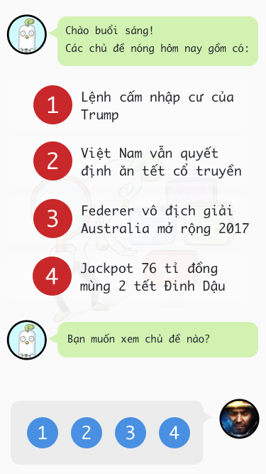
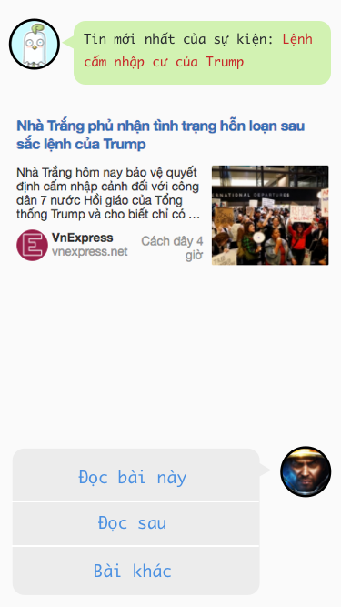
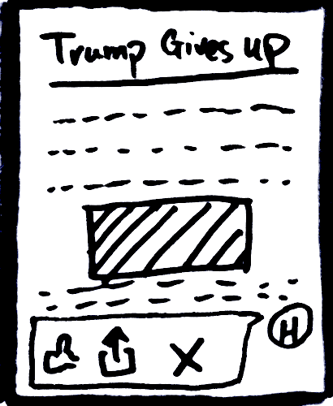
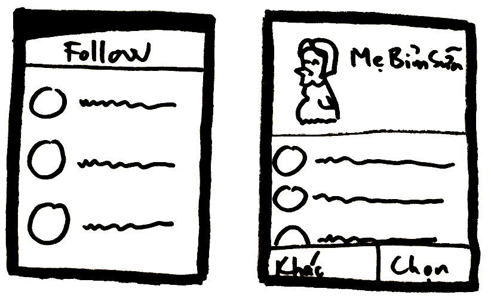

Gariim Busy
- Là mobile app dạng Chat UI, nhân vật là con gà
- Hướng đến đối tượng user dùng mobile, bận rộn và không có nhiều thời gian để lướt bản tin
- Mục đích chính của app là gợi ý các tin quan trọng đáng chú ý trong toàn bộ các chủ đề mà user đó follow. Một lần sử dụng, một user có thể dành ra 3 đến 5 phút mở app ra và đọc nhanh tin tức để nắm hết mọi thông tin cần biết.
- User có thể type, nhưng không cần thiết, sẽ hiện các lựa chọn để bấm nhanh

- Đọc tin bằng cách hiện nội dung lên khung chat, bấm vào show express mode
- Có thể chọn nút xem hoặc bỏ qua để lướt nhanh bản tin

- Giao diện màn hình đọc lấy từ express mode và user có thể làm vài thao tác cơ bản như like, share, comment, chuyển bài,...

- Tổng hợp tin theo danh sách subscribe của user
- Có thể chọn nhân vật đại diện (lập trình viên, designer, enterpreuner startup, bác sĩ, bà nội trợ, mẹ bỉm sữa, nhà khoa học, chính trị gia,...)
- Mỗi loại nhân vật sẽ đi kèm với một danh sách subscribe khác nhau tùy theo sự quan tâm của nhân vật đó

- User có thể tạo nhân vật mới đại diện cho cộng đồng của mình, ví dụ: Nhân vật bác sĩ, đại diện cho cộng đồng user làm ngành y tế
- Mục đích là: Để subscribe nhanh, và để thể hiện bản thân mình dưới góc độ cộng đồng (giống tạo group trên FB)
Bạn được tùy ý bấm like, trích dẫn hoặc copy, post lại, nhưng vui lòng ghi rõ nguồn và tác giả và không làm thay đổi nội dung bài viết. Nếu không làm vậy, mình hy vọng từ nay về sau bạn sẽ luôn cảm thấy cắn rứt lương tâm, ăn không ngon, ngủ không yên. 😆